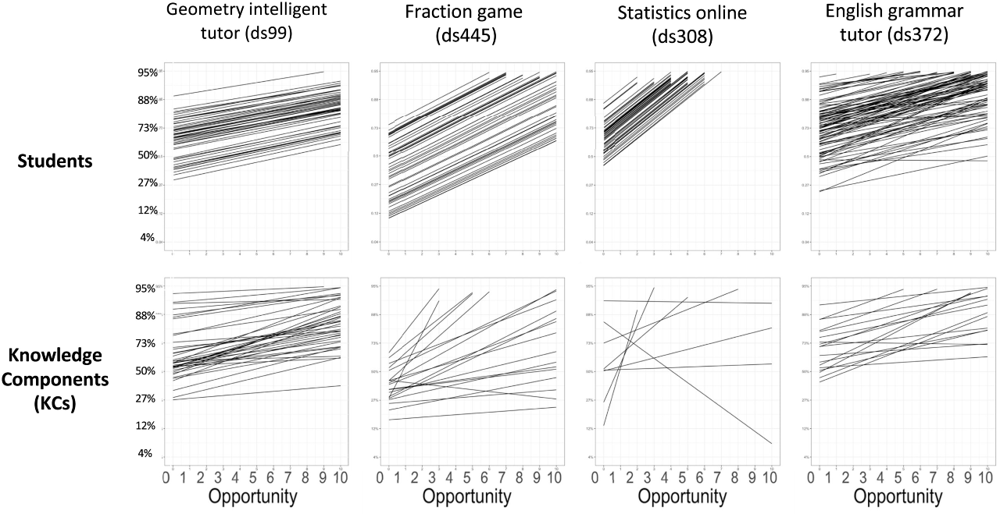

An astonishing regularity in student learning rate
An astonishing regularity in student learning rate
Koedinger, K. R., Carvalho, P. F., Liu, R., & McLaughlin, E. A. (2023). An astonishing regularity in student learning rate. Proceedings of the National Academy of Sciences, 120(13), e2221311120.
What it says
- In a learning analytics-based research study examining more than a million observations of student work across 27 distinct datasets, the authors found that the rate of learning as a function of the number of opportunities for practice is remarkably similar across students.
- After receiving typical instruction (lectures, readings), students' initial accuracy was only 65%. And this varied considerably, with an interquartile range (the gap between the 25th percentile and the 75th percentile) extending from 55% to 75% accuracy.
- Looking at the top row in the Figure below, each line represents an individual student's growth from their starting accuracy through to 10 practice opportunities. If the goal is to reach 80% accuracy, Koedinger et al.'s findings reveal that the number of practice opportunities needed is almost entirely explained by differences in initial knowledge. Differences in individual student's learning rates play a vanishingly small role.
- One notable qualification to the plots below is that these model predictions assume that each student continues to practice until they either reach a high level of accuracy or complete 10 opportunities. In a real world application, it will also be necessary to examine whether students take advantage of the opportunities that are provided (and why some students do not).

Modeled learning curves by student (top row) and knowledge components (bottom row). Each line shows an estimate of the change in performance accuracy as the number of opportunities for practice increases. The y-intercept of each line reflects the initial performance prior to the practice session. The authors find very strong similarity in the learning rate (slope) across students, despite large differences in initial knowledge. In contrast, the rates associated with specific knowledge components (i.e., skills) vary considerably (Modified from Koedinger et al., Figure 3).
What we might learn from it
- This is a fascinating result and, if correct, it pushes back against some widely-held beliefs about learning. Indeed, even the authors of the study were surprised by the relative consistency of learning rates.
- The research and the underlying learning design are all strongly informed by the aspects of deliberate practice (see Ericsson, 2008). Deliberate practice is a concept coined by Ericsson and colleagues in 1993 and it is distinct from mere repetition in several ways. In deliberate practice, the learner has a task with a well-defined goal, is motivated to improve, has access to immediate feedback, and repeats the task multiple times until they have mastered the task. This combination of factors, the theory argues, means that the learner is not mindlessly repeating a task, but is instead primed to recognize their own areas of weakness and purposefully work to improve them.
- Koedinger and co-authors are careful to note that the learning environments in which their data were generated are high-quality and were carefully designed to promote deliberate practice. It is possible, perhaps likely, that learning rates are less similar in situations where students must rely entirely on their own self-regulation and metacognitive skills to learn.